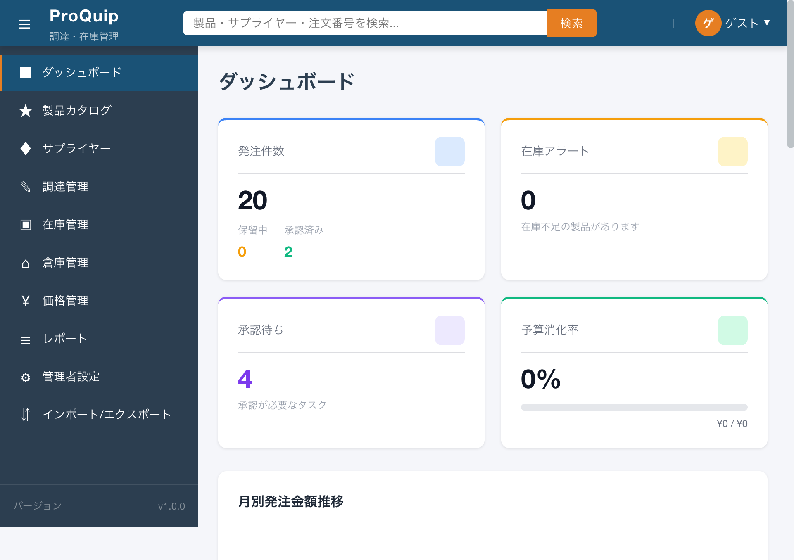
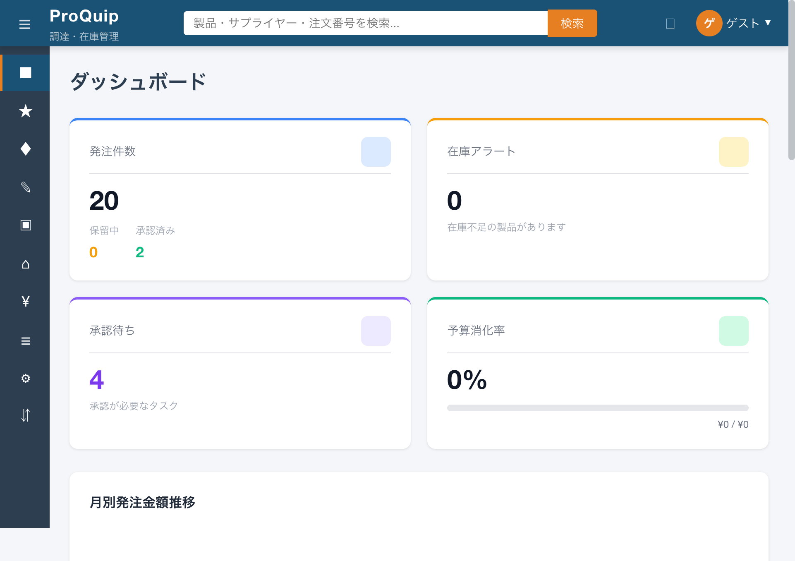
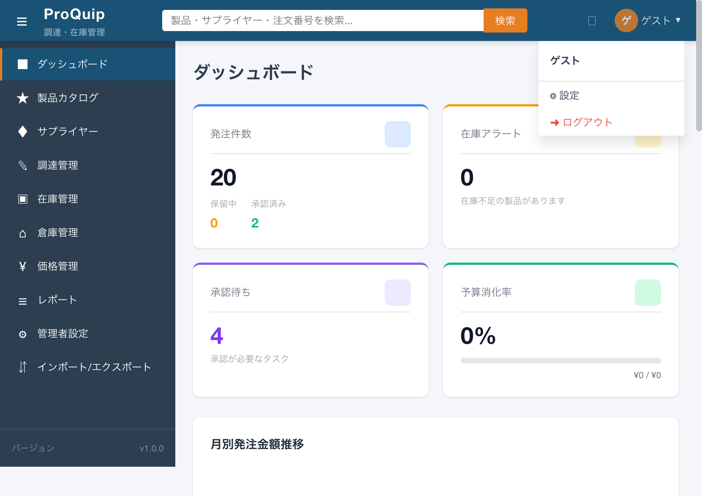

最終更新: 2026-05-22
ヘッダー左端のハンバーガーメニューボタン。サイドナビゲーションの展開・折りたたみを切り替える。
screenshots/F-12/F-12-01_header_initial.png

ヘッダー左端に配置されたハンバーガーアイコン（☰）のボタン。クリックするとサイドナビゲーションの展開・折りたたみを切り替える。
画面の作業領域を広げたいときにサイドナビゲーションを折りたたみ、メインコンテンツの表示領域を最大化するため。
| 項目名 | 表示条件 | 値の取得元 | 備考 |
|---|---|---|---|
| ハンバーガーアイコン（☰） | 常時 | HTMLエンティティ ☰ | テキストベースのアイコン |
なし
| 操作名 | トリガー | 実行内容 | 正常時の結果 | 異常時の結果 | 状態変化 |
|---|---|---|---|---|---|
| サイドバー切替 | ボタンクリック | toggleSidebar EventEmitterを発火。親コンポーネントがサイドバーの collapsed プロパティを反転 |
サイドナビゲーションが展開⇔折りたたみを切り替え | - | サイドバー展開時: アイコン+ラベル+バージョン表示。折りたたみ時: アイコンのみ表示 |
ボタンクリックでサイドバーが折りたたみ状態と展開状態をトグルする。折りたたみ時はメインコンテンツ領域が広がる。
なし（クライアントサイドの状態切り替えのみでAPI通信なし）
なし。全認証ユーザーが利用可能。
サイドバーの collapsed プロパティが true/false でトグル。CSSクラス .collapsed がサイドバーに付与/除去される。
なし
| ファイルパス | 関数/クラス/メソッド名 | 確認内容 |
|---|---|---|
| proquip-frontend/src/app/core/layout/header.component.ts | HeaderComponent.onToggleSidebar() | toggleSidebar EventEmitter発火 |
| proquip-frontend/src/app/core/layout/header.component.html | button.sidebar-toggle | aria-label="メニュー切替"、クリックで onToggleSidebar() 呼び出し |
| proquip-frontend/src/app/core/layout/sidebar.component.ts | SidebarComponent.collapsed (Input) | 親コンポーネントからの折りたたみ状態受け取り |
サイドバー折りたたみ時の表示。
撮影条件: メニュー切替ボタンをクリックしてサイドバーを折りたたんだ状態 ／ 備考: アイコンのみ表示、ラベル・バージョン非表示
screenshots/F-12/F-12-02_sidebar_collapsed.png

High
ヘッダー左側、メニュー切替ボタンの隣に表示されるシステム名称。
screenshots/F-12/F-12-01_header_initial.png
ヘッダー左側に表示されるシステム名「ProQuip」とサブタイトル「調達・在庫管理」。
ユーザーが現在どのシステムを利用しているかを常時視認できるようにするため。ブランドアイデンティティの表示。
| 項目名 | 表示条件 | 値の取得元 | 備考 |
|---|---|---|---|
| システム名「ProQuip」 | 常時 | 固定文字列（テンプレート直書き） | CSSクラス: .logo-text |
| サブタイトル「調達・在庫管理」 | 常時 | 固定文字列（テンプレート直書き） | CSSクラス: .logo-subtitle |
なし（表示専用）
| 操作名 | トリガー | 実行内容 | 正常時の結果 | 異常時の結果 | 状態変化 |
|---|---|---|---|---|---|
| （なし） | - | - | - | - | クリックイベント未設定（ダッシュボードへの遷移なし） |
常時「ProQuip」と「調達・在庫管理」が表示される。
なし（固定文字列のため）
なし。全認証ユーザーに表示。
なし
なし
| ファイルパス | 関数/クラス/メソッド名 | 確認内容 |
|---|---|---|
| proquip-frontend/src/app/core/layout/header.component.html | div.logo | span.logo-text="ProQuip", span.logo-subtitle="調達・在庫管理" |
なし（固定表示のため状態変化なし）
High
ヘッダー中央の検索バー。
screenshots/F-12/F-12-01_header_initial.png
ヘッダー中央に配置された検索ボックス。キーワードに応じて製品・サプライヤー・調達管理の各画面にルーティングする簡易検索。
ユーザーがどの画面にいても、キーワードを入力するだけで関連画面に素早く遷移できるようにするため。
| 項目名 | 表示条件 | 値の取得元 | 備考 |
|---|---|---|---|
| 検索ボックス | 常時 | - | type="search"、プレースホルダー: 「製品・サプライヤー・注文番号を検索...」 |
| 項目名 | 型 | 必須/任意 | 入力制約 | 初期値 | バリデーション | 備考 |
|---|---|---|---|---|---|---|
| 検索キーワード | テキスト（search） | 任意 | 制限なし | 空文字 | 空文字の場合は検索実行しない（keyword.trim() が空なら return） |
ngModelでsearchKeywordにバインド。aria-label="グローバル検索" |
| 操作名 | トリガー | 実行内容 | 正常時の結果 | 異常時の結果 | 状態変化 |
|---|---|---|---|---|---|
| 検索実行 | Enterキー押下 または 検索ボタンクリック | キーワードをtrimし、以下のルーティングルールで遷移:
|
対応する一覧画面にクエリパラメータ付きで遷移 | - | 検索実行後、searchKeywordが空文字にリセットされる |
キーワードを入力してEnterまたは検索ボタンで遷移する。遷移先はキーワードの内容によって自動判定される。検索後は入力欄がクリアされる。
空文字入力時は何もしない（遷移しない）。
なし。全認証ユーザーが利用可能。遷移先の画面はAuthGuardで保護されている。
検索実行後、searchKeywordプロパティが空文字にリセットされ、入力欄がクリアされる。
検索自体はAPI呼び出しを行わず、クライアントサイドのルーティングのみ。遷移先の画面がクエリパラメータを解釈してAPI呼び出しを行う。
| ファイルパス | 関数/クラス/メソッド名 | 確認内容 |
|---|---|---|
| proquip-frontend/src/app/core/layout/header.component.ts | HeaderComponent.onSearch() | 検索キーワードのルーティングロジック（:89-103） |
| proquip-frontend/src/app/core/layout/header.component.html | div.search-bar | input[type=search] + button.search-btn |
なし（検索は遷移動作であり、検索結果は遷移先画面の責務）
High
search を受け取って検索を実行するか（各画面コンポーネントの実装依存）lower.startsWith('po') && /\d/.test(lower) の条件が意図通りか（括弧なし）検索バー右端の「検索」ボタン。
screenshots/F-12/F-12-01_header_initial.png
検索バー右端に配置された「検索」ラベルのボタン。クリックでグローバル検索を実行する。
Enterキー以外にもマウス操作で検索を実行できるようにするため。
| 項目名 | 表示条件 | 値の取得元 | 備考 |
|---|---|---|---|
| 「検索」ラベル | 常時 | 固定文字列 | CSSクラス: .search-btn |
なし
| 操作名 | トリガー | 実行内容 | 正常時の結果 | 異常時の結果 | 状態変化 |
|---|---|---|---|---|---|
| 検索実行 | ボタンクリック | F-12-01-003 グローバル検索の onSearch() を呼び出し |
F-12-01-003 と同一 | - | F-12-01-003 と同一 |
F-12-01-003 グローバル検索と同一の動作。
F-12-01-003 と同一。
なし。
F-12-01-003 と同一。
なし（F-12-01-003 と同一）
| ファイルパス | 関数/クラス/メソッド名 | 確認内容 |
|---|---|---|
| proquip-frontend/src/app/core/layout/header.component.html | button.search-btn | (click)="onSearch()" バインディング |
なし
High
ヘッダー右側のベルアイコンボタン。未読通知がある場合はバッジが表示される。
screenshots/F-12/F-12-01_header_initial.png
ヘッダー右側に表示されるベルアイコン（🔔）のボタン。未読通知件数をバッジで表示する。現在はクリック時の動作が未実装。
承認依頼、在庫アラート、発注遅延等のシステム通知をユーザーに即座に知らせるため。
| 項目名 | 表示条件 | 値の取得元 | 備考 |
|---|---|---|---|
| ベルアイコン（🔔） | 常時 | HTMLエンティティ 🔔 | テキストベースのアイコン |
| 未読件数バッジ | notificationCount > 0 の場合のみ表示（*ngIf） | GET /api/notifications/unread-count → result.unreadCount | CSSクラス: .notification-badge。絶対位置でベルアイコン右上に重ねて表示 |
なし
| 操作名 | トリガー | 実行内容 | 正常時の結果 | 異常時の結果 | 状態変化 |
|---|---|---|---|---|---|
| （クリック） | ボタンクリック | クリックハンドラ未設定 | - | - | なし（通知パネル表示は未実装） |
ページロード時にGET /api/notifications/unread-count を呼び出し、未読件数を取得。0件の場合はバッジ非表示。1件以上の場合はバッジに件数表示。60秒ごとにポーリングで最新件数を取得。
API呼び出し失敗時（エラーコールバック）: notificationCount = 0 にフォールバックし、バッジ非表示。エラーメッセージは表示しない。
なし。全認証ユーザーに表示。通知データ自体のフィルタはバックエンドAPI側の責務。
notificationCount が60秒ごとのポーリングで更新される。0↔正数の変化でバッジの表示/非表示が切り替わる。
| API ID | method | path | request | response | error response | 根拠 |
|---|---|---|---|---|---|---|
| - | GET | /api/notifications/unread-count | なし | { "unreadCount": number } |
エラー時はcatchで notificationCount=0 にフォールバック | ソースコード: header.component.ts:42-50, Network通信確認: reqid=26 |
| ファイルパス | 関数/クラス/メソッド名 | 確認内容 |
|---|---|---|
| proquip-frontend/src/app/core/layout/header.component.ts | HeaderComponent.loadUnreadCount() | 未読件数取得API呼び出し（:42-50） |
| proquip-frontend/src/app/core/layout/header.component.ts | HeaderComponent.ngOnInit() | 初回ロード + 60秒ポーリング設定（:30-33） |
| proquip-frontend/src/app/core/layout/header.component.ts | HeaderComponent.ngOnDestroy() | ポーリングタイマー解除（:36-39） |
| proquip-frontend/src/app/core/layout/header.component.html | button.notification-btn | ベルアイコン + バッジ表示（:27-31） |
現在の確認時点では未読通知が0件のため、バッジ非表示状態のみ確認。
High
ヘッダー右端のユーザー名表示とドロップダウンメニュー。
screenshots/F-12/F-12-01-006_usermenu_open.png

ヘッダー右端に表示されるユーザー情報エリア。アバター（名前の頭文字）、ユーザー名、キャレットを表示し、クリックでドロップダウンメニューを開く。ドロップダウンにはユーザー名・ロール表示、設定リンク、ログアウトボタンがある。
ログイン中のユーザーを視覚的に確認し、設定やログアウトへの導線を提供するため。
| 項目名 | 表示条件 | 値の取得元 | 備考 |
|---|---|---|---|
| アバター（頭文字） | 常時 | username.charAt(0) | CSSクラス: .user-avatar。円形32px |
| ユーザー名 | 常時 | Keycloakプロファイル: profile.lastName + " " + profile.firstName。取得失敗時は authService.getUsername()。例外時は「ゲスト」 | CSSクラス: .user-name |
| キャレット（▼） | 常時 | HTMLエンティティ ▼ | |
| 【ドロップダウン】ユーザーフルネーム | メニュー展開時 | usernameと同一 | CSSクラス: .user-fullname |
| 【ドロップダウン】ロール名 | メニュー展開時 | authService.getRoles()[0]。ロールなしの場合は「一般ユーザー」 | CSSクラス: .user-role。最初のロールのみ表示 |
| 【ドロップダウン】設定リンク | メニュー展開時 | 固定テキスト「⚙ 設定」 | routerLink="/admin" |
| 【ドロップダウン】ログアウトボタン | メニュー展開時 | 固定テキスト「➜ ログアウト」 | CSSクラス: .logout-btn |
なし
| 操作名 | トリガー | 実行内容 | 正常時の結果 | 異常時の結果 | 状態変化 |
|---|---|---|---|---|---|
| メニュー開閉 | ユーザーボタンクリック | showUserMenu を反転 |
ドロップダウンメニューの表示/非表示をトグル | - | showUserMenu: true/false |
| メニュー外クリックで閉じる | メニュー領域外クリック | appClickOutside ディレクティブが onCloseUserMenu() を呼び出し |
ドロップダウンが閉じる | - | showUserMenu = false |
| 設定画面遷移 | 「⚙ 設定」クリック | routerLink="/admin" で管理者設定画面に遷移 | /admin に遷移 | - | 画面遷移 |
| ログアウト | 「➜ ログアウト」クリック | authService.logout() を呼び出し。Keycloakのログアウトエンドポイントにリダイレクト |
Keycloakログイン画面にリダイレクト | - | セッション終了、ログイン画面に遷移 |
ページロード時に Keycloak プロファイルから「姓 名」形式のユーザー名とロール（最初の1つ）を取得して表示する。ボタンクリックでドロップダウンが開き、設定とログアウトの操作が可能。メニュー外クリックで自動的に閉じる。
Keycloakプロファイル取得失敗時: ユーザー名は「ゲスト」、ロールは空文字にフォールバック。現環境では Keycloak /account エンドポイントが401を返すため、「ゲスト」表示となっている。
なし。全認証ユーザーに表示。「⚙ 設定」リンクもロールに関係なく表示される（遷移先の /admin 画面側で制御）。
showUserMenu プロパティが true/false でトグル。*ngIf で div.user-dropdown の表示/非表示を制御。
| API ID | method | path | request | response | error response | 根拠 |
|---|---|---|---|---|---|---|
| - | GET | /auth/realms/proquip/account | Bearer token | KeycloakProfile (firstName, lastName, email等) | 401 → フォールバック「ゲスト」表示 | Network通信: reqid=24（401） |
| ファイルパス | 関数/クラス/メソッド名 | 確認内容 |
|---|---|---|
| proquip-frontend/src/app/core/layout/header.component.ts | HeaderComponent.loadUserInfo() | Keycloakプロファイル取得、ユーザー名・ロール設定（:54-67） |
| proquip-frontend/src/app/core/layout/header.component.ts | HeaderComponent.onToggleUserMenu() | メニュー開閉トグル（:75-77） |
| proquip-frontend/src/app/core/layout/header.component.ts | HeaderComponent.onCloseUserMenu() | メニュー閉じる（:80-82） |
| proquip-frontend/src/app/core/layout/header.component.ts | HeaderComponent.onLogout() | ログアウト呼び出し（:85-87） |
| proquip-frontend/src/app/core/layout/header.component.html | div.user-menu | ユーザーボタン + ドロップダウン（:34-54） |
| proquip-frontend/src/app/core/auth/auth.service.ts | AuthService.getUserProfile() | Keycloakプロファイル取得 |
| proquip-frontend/src/app/core/auth/auth.service.ts | AuthService.getRoles() | ロール配列取得 |
| proquip-frontend/src/app/shared/directives/click-outside.directive.ts | appClickOutside | 要素外クリック検知ディレクティブ |
撮影条件: ユーザーボタンクリックでドロップダウン展開 ／ 備考: ユーザー名「ゲスト」（プロファイル取得失敗時のフォールバック）、ロール未表示、設定リンク・ログアウトボタン表示
screenshots/F-12/F-12-01-006_usermenu_open.png
High